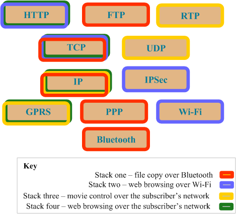

This topic describes the goals of the Symbian platform Comms Architecture and summarises how the architecture addresses these goals.
The Symbian platform Comms Architecture is also known by other terms such as the Three-Plane Comms Architecture and Freeway. The Comms Architecture provides several framework components for generic functionality and a number of plug-in modules which plug into this framework to implement the comms protocols.
The small number of components that make up the framework itself are referred to as "Comms Framework" components while the plug-in modules themselves are known as "Nodes" which are arranged in "Layers" within the framework. Many of the Nodes are supplied as part of Symbian platform but their plug-in nature allows some of these to be replaced with tailored modules by a device-manufacturer.
The Comms Architecture has several goals:
Improving performance so that high-priority data transfers are not interrupted by lower-priority tasks.
Other requirements on the Architecture include the need to remain efficient in the use of ROM, RAM and processor resources, and to provide a high level of reliability.
By separating the code for the data flow and the control functions, it is possible to have each in a separate thread or even each in a separate process. This allows appropriate resources to be allocated and priority to be assigned to support Quality of Service, prioritisation of time-critical data flows and optimised plug-ins for specific protocols.
Communication between the data and control threads, and between the layers is performed by an asynchronous messaging system known as the Transport.
In fact the Comms Architecture actually divides the area marked Control above into two areas, Control and Management. This is the reason that this Comms Architecture is also known as the Three-Plane Architecture. In future diagrams there will be three Planes: Data Flow, Control, and Management. The Control Plane is often shown divided in half to indicate that the Control Plane handles both Connections and data channels within a Connection. This is described in more detail in Planes.
The Comms Architecture uses the concept of multiple stacks of technologies, from high level technologies such as FTP down to lower level technologies (link layer technologies) running on GPRS or Wi-Fi. An individual Stack is a set of technologies which make up a communication path. A Stack in this context is a single list of technologies from the application to the physical hardware. An example of such a Stack is: HTTP over TCP over IP over GPRS, which might be used in web browsing via a subscriber's mobile network. The layered architecture allows both flexibility in the configuration of these Stacks, as well as dynamic reconfiguration of the Stacks in response to changes in the environment of the device (for example moving from a Wi-Fi to a 3G environment). The link-layer technologies are known as Bearers and the ability to switch a Data Flow from one bearer to another is called Bearer Mobility. But it is possible to have the ability to switch from one technology to another at any level in the stack providing full mobility.
In this example IP and TCP are used in three different stacks. A combination of these Stacks could be running concurrently.
Each stack requires a configuration that details how these protocols find and work with each other; the protocols themselves need to know how to talk with the other protocols. To allow flexibility, each protocol must avoid making assumptions about the protocols below or above it, and instead rely on the framework and device configuration. The framework ensures that each protocol is created and appropriately configured when required, and is attached to the protocols above and below it.
The advent of multiple wireless technologies has allowed a device to switch between protocols depending on what is available. This is known as Freeway, and an example would be for a browser to switch from Wi-Fi to GPRS when a mobile device goes out of range of a Wi-Fi hotspot but is in range of a GPRS signal. The Comms Architecture provides for this by allowing such transitions to be defined on the device as part of the definition of the possible combinations of protocols that could make up the various Stacks.
The figure below illustrates the scope of the Comms Architecture in Symbian platform from the point of view of an end-to-end connection.
A key requirement of the Comms Architecture is the performance of data transfer. The data transfer performance can be measured in three different ways:
Throughput - the amount of data transferred measured against time
Latency - the amount of time it takes a single element of data to move from one end of the communication route to the other
Jitter - the unwanted variance in the potential delay for each item of data sent, which in turn causes data to arrive in the wrong order or for unacceptably-long pauses in the data stream .
The Comms Architecture addresses these needs by separating all control and data tasks. The control tasks are those that are involved with the creation and management of the data connections, but which are not directly involved with the transfer of data itself. The data tasks are those involved directly with the transfer of data. The control tasks are deemed as lower priority than the data tasks, and thus the data tasks are always run in preference to the control tasks. For example, if an application requests a new connection, the creation of this connection will not interrupt any existing data transfer operations.
The Comms Architecture also improves the handling of Quality of Service resource reservation by structuring the framework around the concept of channels, with the framework then able to specify the Quality of Service parameters per channel.
Copyright ©2010 Nokia Corporation and/or its subsidiary(-ies).
All rights
reserved. Unless otherwise stated, these materials are provided under the terms of the Eclipse Public License
v1.0.